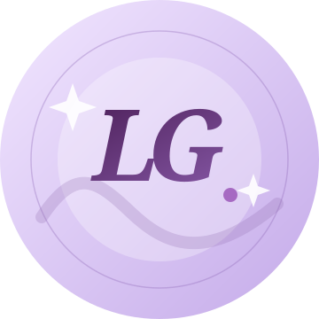

Python
Linguagem para desenvolver lógica, automatizar tarefas e construir aplicações.
Olá, seja bem-vindo(a) ao meu espaço
PORTFÓLIO / 2026 DESENVOLVIMENTO
Estudante de TI Desenvolvimento back-end
Gosto de entender o que acontece por trás das telas e transformar ideias em sistemas úteis, organizados e cheios de propósito.

Um pouco sobre mim
Sou estudante do Ensino Médio Técnico em Tecnologia da Informação no Senac RN e tenho especial interesse pelo desenvolvimento de sistemas, principalmente na área de back-end.
Gosto de explorar a lógica da programação, a organização de dados e a forma como diferentes partes de uma aplicação se conectam. Cada projeto escolar é uma oportunidade de praticar, experimentar e aprender algo novo.
Fora das telas, encontro inspiração na música, na leitura, nas séries e no desenho — interesses que também fazem parte da minha maneira de criar.
Uma combinação de lógica, estrutura e criatividade, desenvolvida ao longo dos meus estudos em TI.
Linguagem para desenvolver lógica, automatizar tarefas e construir aplicações.
Permite adicionar comportamento e interatividade às páginas web.
Organiza o conteúdo e a estrutura das páginas na web.
Define cores, tipografia, composição e adaptação às telas.
Ajuda a consultar, organizar e manipular informações em bancos de dados.
Conectam aplicações e permitem a troca de dados entre sistemas.
Experiências de aprendizagem. As descrições, tecnologias e URLs abaixo são demonstrativas e precisam ser atualizadas.
Uma proposta de presença digital para apresentar uma ideia ou marca de maneira visual e organizada.
Descrição de exemplo — personalizarVer projeto Link demonstrativoUma ideia de página informativa com foco em acolhimento e comunicação responsável sobre o tema.
Descrição de exemplo — personalizarVer projeto Link demonstrativoUm conceito de site para organizar assuntos de Geografia e tornar o conteúdo mais acessível.
Descrição de exemplo — personalizarVer projeto Link demonstrativoUma proposta digital inspirada em colaboração, cuidado e conexão entre pessoas.
Descrição de exemplo — personalizarVer projeto Link demonstrativoUma ideia de experiência interativa para revisar conceitos e perguntas de programação.
Descrição de exemplo — personalizarVer projeto Link demonstrativoUma proposta de organização visual para acompanhar atividades e compromissos de estudo.
Descrição de exemplo — personalizarVer projeto Link demonstrativoUma proposta de apresentação ou exploração de temas ligados à inteligência artificial.
Descrição de exemplo — personalizarVer projeto Link demonstrativoUm projeto em desenvolvimento, cujo propósito e funcionalidades serão apresentados na versão final.
Descrição de exemplo — personalizarVer projeto Link demonstrativoQuer conversar sobre tecnologia, projetos ou oportunidades de aprendizado? Você pode me escrever por e-mail.
leticiagabriellyleticia0708@gmail.comDemonstração: o formulário valida os dados, mas não envia nem armazena mensagens.